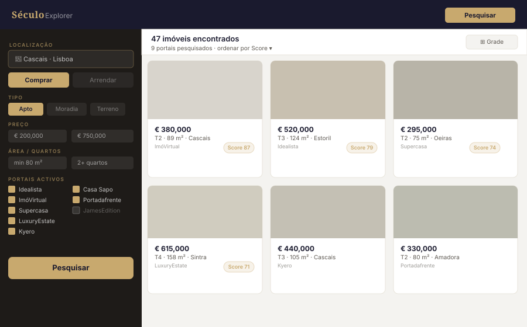
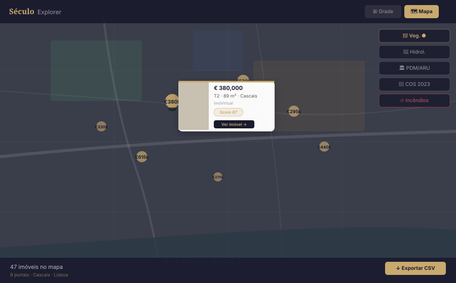
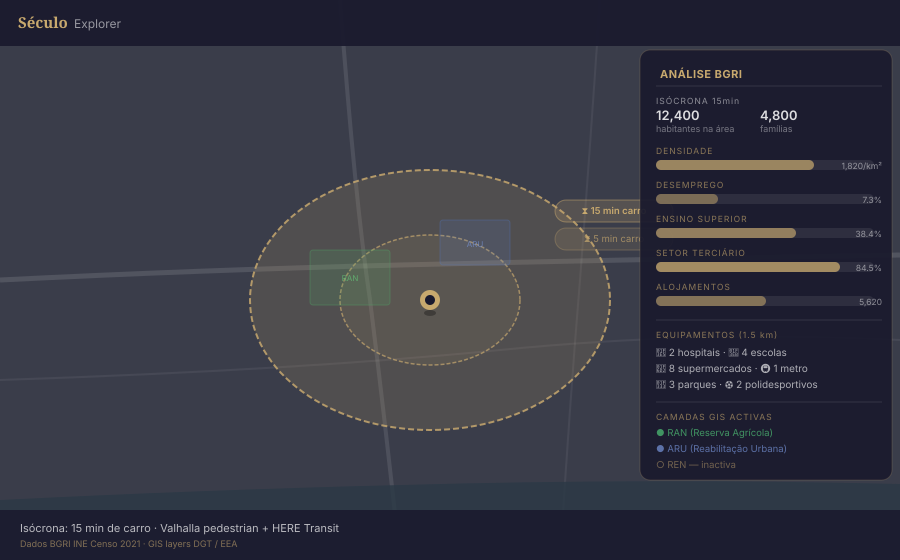
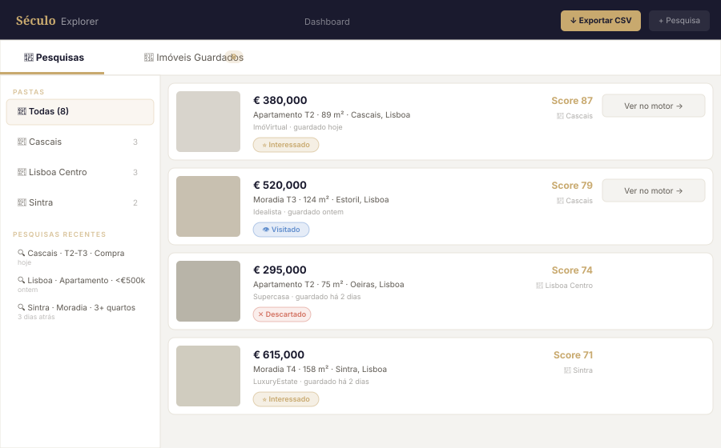

Most people spend weeks bouncing between property portals before finding anything worth visiting. Século Explorer searches across Portugal's top portals simultaneously — covering 98%+ of the available market. Set your filters once, then browse an interactive map of results. Go deeper with overlays covering land classification, flood zones, wildfire history, urban rehabilitation areas, drive-time isochrones, census demographics, nearby amenities, and much more. Found your shortlist? Export to CSV in one click.

Search 11 portals at once

Explore results on an interactive map

Analyse territory with GIS layers & census data

Save, organise and export your shortlist
The Portuguese market is fragmented across a dozen major portals and dozens of smaller regional ones. Each requires separate searches, each shows different listings, and none of them talk to each other. You end up with fifteen open tabs, duplicate listings at three different prices, and still no confidence you've seen everything. Século Explorador was built precisely to solve this.
Choose your location, property type, price range, number of bedrooms, and any features that matter to you. It only takes a moment.
Século searches ImóVirtual, Idealista, Supercasa, LuxuryEstate, Kyero, Casa Sapo, Portadafrente, JamesEdition, and more — all at the same time. Results are deduplicated, scored by relevance, and pinned on an interactive map the moment the search completes. No account needed to try.
Toggle land-use maps, flood risk, wildfire history, drive-time isochrones, and census demographic data directly on the map. Save properties to your account, organise them into project folders, and export to CSV or Excel whenever you're ready. Shared search links let you send a full briefing to a partner or agent in seconds.
Whether you're looking for your first apartment in Lisbon, or a quinta in the Alentejo; stop wasting away your evenings digging through nine different websites. Just set your filters once, view everything on the map, bookmark what interests you, and visit only the properties worth your time.
Run systematic scans across 11 portals to catch pricing gaps before the market corrects. Sort results by relevance score, toggle land-classification and flood-risk overlays to filter out liability, and export structured data to Excel for modelling.
Multiple saved searches and bulk CSV export included.
Deliver client shortlists in minutes! Run a multi-portal scan, layer census data, and drive-time isochrones to validate the neighbourhood fit. Save results to a project folder, and share with your client using a simple link.
Agency-tier accounts support 500+ saved properties and unlimited exports.
We built Século for ourselves first. After weeks of never-ending browsing, endless listings, and never truly knowing the neighbourhood behind the photos, we decided there had to be a better way. Século Explorador is the tool we wished existed when we started searching. Now it's yours too.